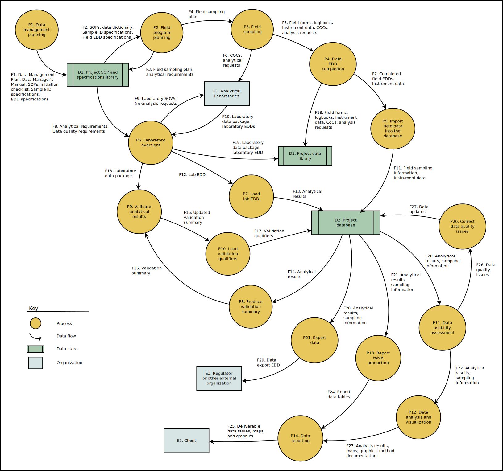

Data Management Workflow for Sampling Data
This page describes data management processes and data flows for projects (or project tasks) that include the collection and chemical analysis of environmental samples. An alternative workflow for the compilation and synthesis of data from other sources is described on the companion wiki page Data Management Workflow for Historical Data.
Data management processes and data flows are shown in the following data flow diagram (DFD). Each of the processes and data flows are described in following sections. This DFD uses Yourdon/DeMarco symbology, as described by Wikipedia. Note that a DFD is not a flowchart, and the arrows in the DFD do not represent sequence or control flow. A flowchart analogue follows the DFD, but the DFD is a more detailed and useful representation for a data-based workflow.
The following diagrams can be viewed more clearly by zooming this page or by downloading the images or viewing them in a separate browser tab.

The flowchart to the right is a representation of the same processes that shows the ideal sequence, or flow of control, between them. In a typical project there may be additional feedback loops and forward skips that are not shown here (forward skips include, for example, analyses that are conducted on data before they are validated). The actual sequence of processes in a project may therefore be (or become) less organized than shown in this flowchart. The DFD shows data-based, rather than control-based, relationships between processes, and is generally more stable than the flowchart. Controlling the control flow is a project management challenge rather than a data management challenge, though it affects data management processes through impacts on schedule and budget. The person responsible for each processs should be identified in the project plan. This responsibility includes ensuring that data quality is improved or maintained within the task’s scope and budget. This responsibility may be held by one of the individuals who carry out each process, or by other project staff.
The processes shown in the diagram above, and described in the section below, and also those on the page Data Management Workflow for Historical Data, should be considered for separate project tasks, or subtasks under a data management task. Budgeting, and tracking scope and budget by these processes, can help to more accurately estimate budgets and schedule, and to track progress throughout a project.
Processes
P1. Data Management Planning
This process should ordinarily be conducted as part of project planning. It should be carried out jointly by the project manager and the project data manager. This process may include:
- Identification of data needed for analyses and reporting, based on project goals (the DQO process).
- Identification of data needed for export, if data are to be transmitted to other organizations.
- Completion of a project initiation checklist.
- Development of a scope description for data management activities.
- Identification of the data model needed and requirements for field sample identification.
- Identification of analytical laboratories, analytical requirements, and electronic data deliverable (EDD) formats.
- Determination of the coordinate reference system and basemap data to be used.
- Budgeting for data management activities.
- Development of a Data Management Plan.
- Initiation of a project database and GIS project.
Other activities may be conducted and products produced if the project will require other types of data, such as historical data.
P2. Field Program Planning
This process should be carried out jointly by the field program lead, field staff, and project data manager. The process may include:
- Specification of procedures, tools, and forms to be used to collect information in the field.
- Specification of rules for naming and labelling locations, collections, interpretive samples, analytical samples, and containers, and documentation in a SAP or FSP.
- Initialization of GPS hardware, software, and data.
- Training of field staff in field documentation requirements and procedures.
P3. Field Sampling
This process is carried out by field staff. The essential activity with respect to data management is the collection of field documentation as specified in the SAP or FSP.
P4. Field EDD Compilation
Sampling information collected in the field must ordinarily be compiled into a format that represents location and sampling information in a form consistent with the data model used for the project. Field EDD forms can be used for this purpose, for data that will be loaded into the database. This process should be carried out by field staff, with support from the project data manager.
P5. Import Field Data Into the Database
Field sampling information is imported into the project database from the field EDD formats (or other formats as determined during planning). This process is carried out by the data manager, but may require consultation with field staff if data quality issues are found with the field records. The standard procedure is to carry out this process using a SQL script. The wiki page Workflows for Loading Data to Postgres describes the data loading process in more detail.
P6. Laboratory Oversight
This process should be carried out by the project chemist. Laboratory specifications, laboratory deliverables, and any additional analysis requests should all be handled by the project chemist as part of this process. Coordination with data validators is also carried out as part of this process. Ordinarily this process includes communication between the project chemist and the data manager regarding timing, format, and quality of the laboratory deliverables and validation results.
P7. Load Lab EDD
This process is carried out by the project data manager. Laboratory EDDs are loaded into the project database, and quality assurance checks of the data are carried out as part of this process. The standard procedure is to carry out this process using a SQL script. If the laboratory EDD format is one that has been previously used, then an existing loading script may be used or customized; if not, a new script will have to be developed (and if so, a budget for this effort should have been established during the planning process). The wiki page Workflows for Loading Data to Postgres describes the data loading process in more detail, particularly when a script must be developed for a new EDD format. If problems are found with the EDD format or content, the data manager should communicate these to the project chemist for resolution with the laboratory.
P8. Produce Validation Summary
This process is carried out by the project data manager. After each laboratory EDD is loaded to the database, those data are extracted and summarized into a spreadsheet for use by the data validators. This procedure is carried out using a SQL script.
P9. Validate Analytical Results
This process is carried out by validation chemists, either in-house or contracted. This process results in the assignment of validation qualifiers to analytical results. Those qualifiers should be recorded in the validation summary spreadsheet.
P10. Load Validation Qualifiers
This process is carried out by the project data manager. Data validation qualifiers are extracted from the data validation summary spreadsheet and added to the corresponding values in the database. This procedure is carried out using a SQL script.
P11. Data Usability Assessment
Prior to conducting statistical, geospatial, or other analyses, the usability of the selected data should be assessed. This process should be carried out by the data analyst and project data manager, depending on the type of assessment to be performed and the best tool or technology for the job. The data usability assessment may make use of metrics for the different dimensions of data quality. This process ordinarily starts with the production of appropriate data summaries by the data manager.
P12. Data Analysis and Visualization
This process should be carried out primarily by the data analyst, but the first step in analyses will frequently be the selection, extaction, and summarization of data from the database, and that step may be carried out by the project data manager. The Data Accessibility page describes a variety of different ways in which data can be accessed and summarized by either data managers or other project staff. A number of standard data summaries are available that meet many common data needs. These standard summaries may be used as is, or customized. More specialized data summaries may need to be created to support some analyses. Often data summarization could be carried out using either SQL or analysis software (e.g., R, Python, Julia), and the most appropriate approach should be identified through discussions between data analysts and data managers.
Summaries of chemistry data should use the default rules for summarization of chemistry data or explicitly specify alternate data handling rules. Additional information on data summarization (primarily for data managers) is presented on the pages Producing Custom Data Summaries and Guidance and Tips for Data Managers. Custom scripts have also been developed to prepare data for some types of specialized analyses (e.g., unmixing, HCPCA, and t-SNE). Otherwise, custom data summarization scripts may need to be developed for particular analyses (if so, a budget for this effort should have been developed during the planning process).
Data analyses should follow relevant recommendations on Data Analysis Standards and Guidance and Best Practices for Data Analysis, and avoid the Worst Practices for Data Analysis. An initial stage of data exploration may be facilitated by using some of the available GUI Tools for Data Exploration.
Requests for data that are to be used for analysis and visualization may be recorded in a request tracker. Templates and examples are in M:_trackers.
Although data analysis and visualization is described here as a single process, frequently it is a multi-step process that could could be described by its own flowchart, data flow diagram, work breakdown structure, or other type of process map. Describing and documenting the planned data analysis process during project planning, and accounting for variances, can help to ensure that this work is carried out in a way that clearly supports project goals and is performed in an orderly and efficient fashion.
P13. Data Table Production
This process is carried out by the project data manager. Data to be reported as a project deliverable are extracted from the project database and restructured and formatted as appropriate. This process is ordinarily scripted. The wiki page Producing Data Summaries describes the major steps in this process. The section “Producing Data Tables for Reports or for Data Analyses” on the wiki page Guidance and Tips for Data Managers contains guidelines for the production of report data tables.
Requests for data that are to be used for data table production may be recorded in a request tracker. Templates and examples are in M:_trackers.
P14. Data Reporting
This process is carried out cooperatively by multiple project staff. Reports may include data tables, graphics, and maps prepared by DMA staff and others. This process ordinarily requires that more effort be applied to consistency of data representation and adherence to publication standards than do the data analysis and visualization activities.
P20. Correct Data Quality Issues
Initiation of data analyses, and the associated data usability assessment (P11) may reveal data quality issues that were not identified during initial data compilation and loading. These issues are typically identified by a data analyst, and resolution of an issue may involve data managers, data analysts, field staff, and the project manager. These issues may be recorded in a data issue log while a resolution is being developed (use of a data issue log is shown as part of the workflow for historical data).
P21. Export Data
This process may not be required for all projects. When data must be exported to a regulator or some other organization, the data ordinarily must be retrieved from the project database and prepared in a specified data exchange format or EDD. The EDD format that is used for data exchange between organizations is typically different from the EDD format in which laboratory results are delivered. The data exchange EDD format may be specified by the external organization or may be determined by a negotiation between Integral and that organization. Some external organizations may require data that Integral would not typically record (e.g., during field work), and so export data requirements must be considered during project and data management planning. This task is ordinarily carried out by data managers, but may require some support from other project staff.
Exporting data should be carried out following the process described on the wiki page Producing Data Summaries. Requests for data that are to be exported for others may be recorded in a request tracker.
Data Flows
F1. Planning Products
The planning products in this data flow may contain the following items (note that items below link to more detailed documentation):
- A project initiation checklist
- Data quality goals and standards for the project
- A data management plan (DMP) or equivalent information in a work plan
- Specifications for location and sample identifiers to be used in the field, specified in a DMP, work plan, or field sampling plan (FSP)
- Specification for electronic data deliverables (EDDs) for field and laboratory data
- Identification of standard or custom data management SOP
- Specifications of analyses to be conducted, methods to be used, and chemical data validation procedures to be followed
- An initial data manager’s manual (DMM).
F2. Inputs for Field Program Planning
This data flow consists of a subset of planning products from process P1, including:
- Specifications for location and sample identifiers to be used in the field, specified in a DMP, work plan, or field sampling plan (FSP)
- Specification for electronic data deliverables (EDDs) for field data
- Standard or custom data management SOPs
- A data dictionary for information to be recorded on field forms and in field EDDs.
F3. Field Program Planning Documents for Library
This data flow consists of documents produced by the field program planning process that are to be maintained as a resource and reference. This include:
- The field sampling plan (FSP)
- Analytical requirements to be provided to the laboratory.
F4. Field Program Planning Documents for Field Crew
This data flow consists of information produced by the field planning process that are to be used by field staff. This information is ordinarily compiled into an FSP, which is the sole component of this data flow. (Other documents to be used by the field staff, such as a Health and Safety Plan, are not part of the data management workflow.)
F5. Field Sampling Records
This data flow consists of all digital and paper documents produced during the course of field sampling and may include, but not be limited to:
- Field logbooks
- Completed field forms
- GPS records
- Instrument data records
- Chain of custody (COC) forms
- Analysis request forms
- All emails and other recorded communications pertaining to the conduct of field operations, specifically related to data collection.
F6. COCs and Analytical Requests
This data flow consist of all documents and information conveyed from field staff to the analytical laboratories, including COC forms, analytical requests, and emails and records of other communications pertaining to sample analysis and data handling.
F7. Standardized Field Sampling Records
This data flow consist of:
- Field sampling information compiled into a field EDD format, or an alternative as specified during the planning process.
- GPS data
- Field instrument data
F8. Analytical Plans
This data flow consists of specifications for laboratory analyses, including:
- Analyses to be conducted
- Analytical methods to be used
- Data quality standards to be met by the laboratory
- The laboratory EDD format to be used
- Level of data validation to be conducted.
F9. Analytical Specifications for the Laboratory
This data flow consists of specifications and work requests provided to the analytical laboratory, and ordinarily includes:
- A description of analyses to be conducted, the methods to be used, and the format and content of laboratory reports and EDDs to be produced by the laboratory, typically in the form of a Statement of Work (SOW)
- Any requests for sample reanalyses that are needed following initial review of laboratory deliverables.
The first of these items will ordinarily be transmitted to the laboratory one time, after project planning is completed, whereas the second item (reanalysis requests) may be transmitted on multiple occasions.
F10. Analytical Laboratory Results
This data flow consists of laboratory deliverables as specified in the SOW, and ordinarily includes:
- A laboratory report for each sample delivery group (SDG) as a PDF file
- One or more completed laboratory EDDs in the specified format.
F11. Normalized Field Sampling Records
This data flow consists of field sampling information that is transformed from the field EDD format into the structure of database tables. This data flow is electronic, and occurs between the data loading script and the database server. The data loading process (P5) is described in more detail on the wiki page Workflows for Loading Data to Postgres.
F12. Laboratory EDD
This data flow consists of the laboratory EDD, transmitted from laboratory oversight staff to data management staff after review, tracking, and approval.
F13. Normalized Analytical Laboratory Results
This data flow consists of data from the laboratory EDD that is transformed into the structure of database tables. This data flow is electronic, and occurs between the data loading script and the database server. The data loading process (P7) is described in more detail on the wiki page Workflows for Loading Data to Postgres.
F14. Analytical Laboratory Results Extracted from Database
This data flow consist of analytical results for one or more SDGs that is used to prepare data summaries to be used by data validators. This data flow is electronic and occurs between the database server and the data summary script.
F15. Analytical Laboratory Results Summarized for Data Validators
This data flow consist of analytical results for one or more SDGs that is extracted from the project database (F14), summarized in a format that is designed to be annotated by the data validators.
F16. Results of Data Validation
This data flow consists of the summary of analytical results (F15) annotated with data validation qualifiers and validator comments, and possibly including revisions to data values and detection limits.
F17. Data Validation Qualifiers
This data flow consists of new information provided by data validators (F16) that is used to update existing analytical results in the project database. This data flow is electronic and occurs between the data loading script and the database server.
F18. Field Records for Library
This data flow consists of all digital and paper documents produced during the course of field sampling and may include, but not be limited to:
- Field logbooks
- Completed field forms
- GPS records
- Instrument data records
- Chain of custody (COC) forms
- Analysis request forms
- All emails and other recorded communications pertaining to the conduct of field operations, specifically related to data collection.
F19. Analytical Laboratory and Lab Oversight Records for Library
This data flow consists of all laboratory deliverables and laboratory oversight records and may include but not be limited to:
- Laboratory SOWs
- Data reports and EDDs produced by the laboratory
- Tracking records used to oversee correct and timely completion of laboratory wor
- Reanalysis requests sent to the laboratory
- Emails and other communications pertaining to the analysis and reporting of data.
F20. Data for a Task- or Analysis-Specific Data Analysis
This data flow ordinarily will consist of one or more subsets of data that are selected based on the needs of a specific data analysis. The work flow is electronic, occurring between the database server and the SQL script used to select, summarize, and restructure the data as needed for analyses to be conducted using ArcGIS, R, QGIS, Orange, Python, or other tools.
F21. Data for Deliverable Data Tables
This data flow consists of all sampling information and analytical data that are to be included in deliverable data reports.
F22. Selected or Annotated Data For Analysis or Visualization
This data flow consists of the data from F20, summarized and restructured as appropriate for each data analysis to be conducted.
F23. Final Analysis Results for Interpretation and Deliverable Preparation
This data flow consist of all the results of data analyses that are essential for understanding, decision-making, and reporting. It may include:
- Data tables used as input to the analysis
- Data tables produced by the analysis
- Maps showing data or the results of data analyses
- Statistical graphics showing data or the results of data analyses.
F24. Report Data Tables
This data flow consists of all sampling information and analytical data that are to be included in deliverable data reports (F21), restructured into deliverable data tables. Guidance for production of these tables is in the section titled “Producing Data Tables for Reports or for Data Analyses” of the wiki page Guidance and Tips for Data Managers. The tables in this data flow ordinarily will require formatting (typically by production staff) and addition of table numbers and titles.
F25. Deliverable Data Tables, Maps, and Graphics
This data flow consist of all of the materials from data flows F23 and F24, compiled and prepared in a form for delivery to the client.
F26. Data Quality Issues
This data flow consists of a description, and possibly examples, of data quality issues that are identified when data are used. This data flow may include emails, spreadsheets, example scripts, and entries in an issue tracking log.
F27. Data Updates
This data flow consists of revisions to the project database and ordinarily takes the form of changes made using scripted SQL statements.
F28. Sampling Information and Analytical Results for Data Export
This data flow consists of all project data that is to be exported from the database for transmittal to another organization. This data flow is ordinarily completely electronic, through a connection between the database and the export script.
F29. Data Export EDD
This data flow consists of project data that has been transformed into a data exchange EDD format as specified by, or agreed to with, the receiving organization.